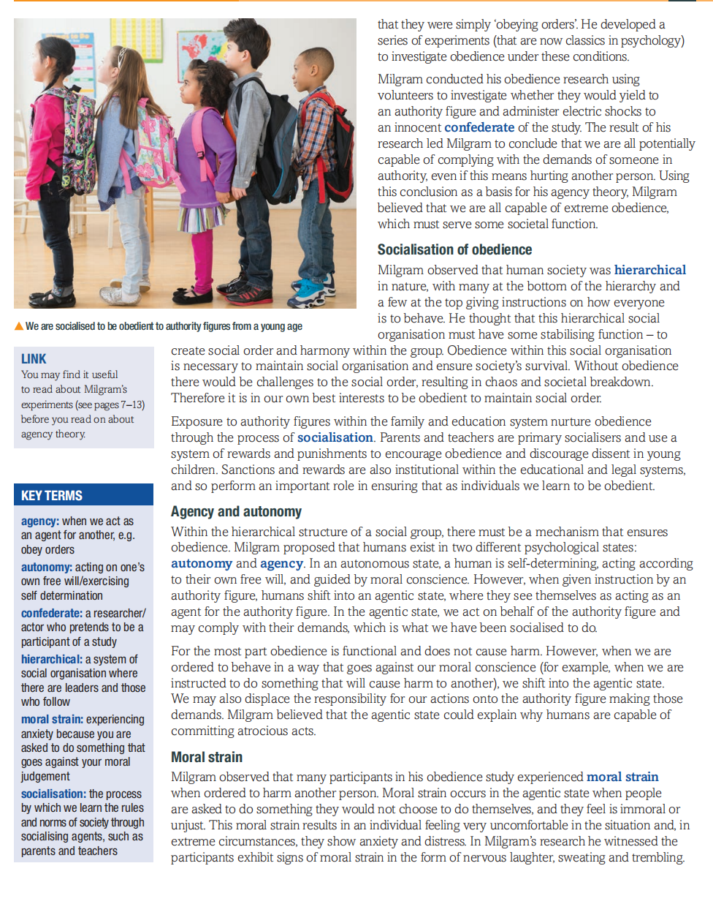
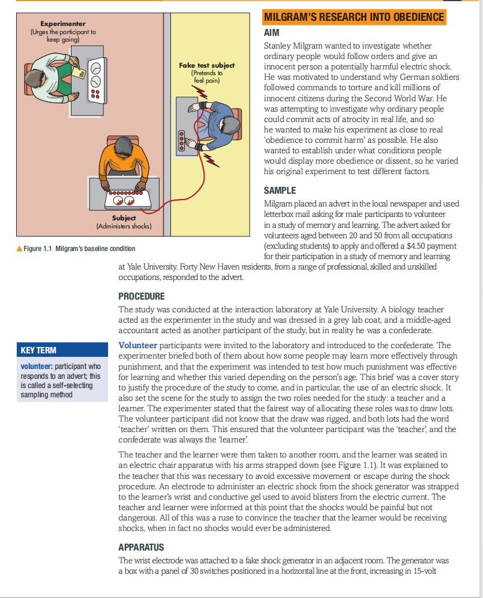
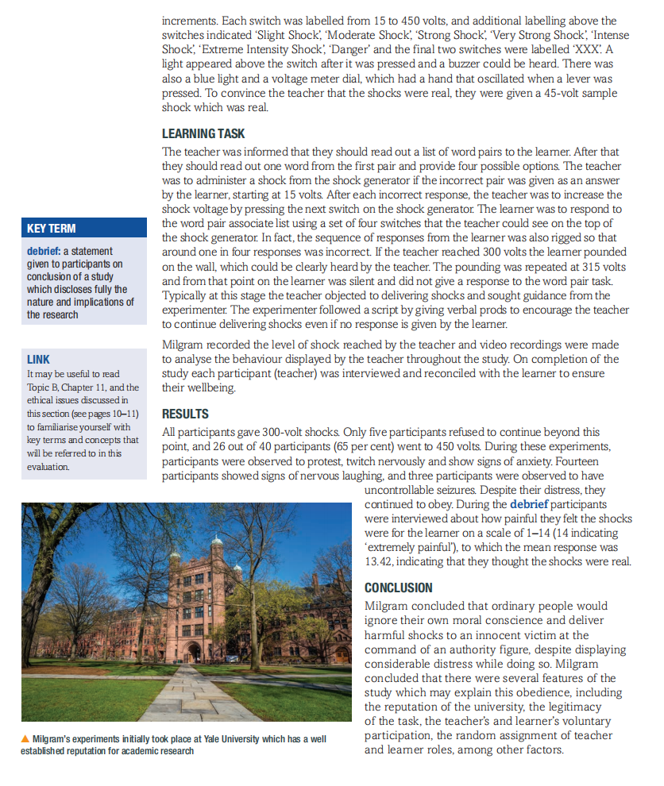
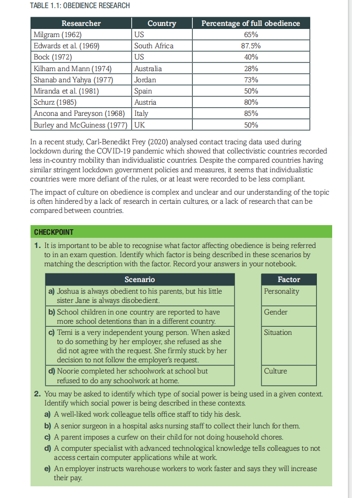

Unit 1 — Topic A: Social Psychology（社会心理学）
| Chapter 章节 | Topic 主题 |
|---|---|
| Chapter 1 | Obedience（服从）← 当前章节 |
| Chapter 2 | Conformity（从众） |
| Chapter 3 | Minority influence and individual differences（少数人影响与个体差异） |
| Chapter 4–7 | Methods & Studies（方法学与实验） |
| Paper | % of IAS | % of IAL | Marks | Time |
|---|---|---|---|---|
| Paper 1 (WPS01/01) Social & Cognitive Psychology | 40% | 20% | 64 | 1 hr 30 min |
| Paper 2 (WPS02/01) Biological Psychology, Learning & Development | 60% | 30% | 96 | 2 hours |
By the end of this chapter you should be able to:
Imagine this scenario 想象这个场景：
You are in your school library studying for an important exam. You are working silently alongside other students who have exams too. The head librarian, a respected staff member at your school, approaches your table and asks you and the other students to leave your seats immediately as there is a special guest speaker who needs the library to give a lecture.
Would you rather continue to work in the library because it is the only quiet space and the exam is very important?
In small groups, discuss how you might react when the librarian requests that you leave. What factors would make you leave the library and what factors would make you stay? Compare your discussion to others in the class.
图书馆场景引入了本章的核心问题：什么时候我们会服从权威？什么时候会反抗？
👉 这个场景会在后面的考试应用题中用到（Activity 3），记住它！
Social psychology developed from a group of people working in Europe in the mid-19th century, who were concerned with understanding the collective or group mind. In 1895 a French writer, Gustave Le Bon, observed that crowds displayed mob-like behaviour because individuals within it changed their behaviour because they were part of a group.
The rise of experimental social psychology can be attributed to Floyd Allport (1924). His book outlined a manifesto for social psychology that argued for an experimental approach, leading to laboratories' investigation of social behaviour.
Today, social psychology investigates a range of social behaviours and attitudes such as persuasion and attitude formation, social influence（社会影响）, aggression and group behaviour. This topic focuses on obedience（服从）, conformity（从众）and minority influence（少数人影响）.
Obedience is a form of social influence（社会影响） where the behaviour of an individual is influenced by a real or imagined pressure from another. Obedience can be defined as compliance to the real or imagined demands of an authority figure. Yielding to these demands is considered to be obedience, while rejecting the demands is known as dissent or resistance to authority（反抗/抵制权威）.
In our everyday lives we obediently follow the instructions of teachers, employers, police officers and the rules of society. Such obedience can prevent accidents and results in social order most of the time. However, there are times when obedience has led to horrific consequences. Notably, many atrocities that have been committed against innocent people have been the result of unquestioning obedience. During the Second World War, the Nazi party instructed the systematic killing of millions of Jewish people. This could only have been achieved through the collective obedience of many German soldiers who carried out these orders.
| 类型 | 英文 | 核心特征 | 例子 |
|---|---|---|---|
| 从众 | Conformity | 受大多数人影响 | 大家都穿校服，你也穿 |
| 少数人影响 | Minority Influence | 被少数人说服改变观点 | 一个朋友说服你尝试新事物 |
| 服从 ⭐ | Obedience | 听从权威人物命令（有等级差！） | 听老师/警察/老板的话 |
👉 考试必考区分：Obedience 必须有"上级→下级"的关系，Conformity 是平级之间的影响。
Stanley Milgram wanted to investigate conditions that could explain the atrocities committed during the Nazi control of Germany, in particular the defence claims made by many senior Nazi officers that they were simply 'obeying orders'. He developed a series of experiments (that are now classics in psychology) to investigate obedience under these conditions.
Milgram observed that human society was hierarchical（等级制的） in nature, with many at the bottom of the hierarchy and a few at the top giving instructions on how everyone is to behave. He thought that this hierarchical social organisation must have some stabilising function — to create social order and harmony within the group. Obedience within this social organisation is necessary to maintain social order and ensure society's survival. Without obedience there would be challenges to the social order, resulting in chaos and societal breakdown. Therefore it is in our own best interests to be obedient to maintain social order.
Exposure to authority figures within the family and education system nurture obedience through the process of socialisation（社会化）. Parents and teachers are primary socialisers and use a system of rewards and punishments to encourage obedience and discourage dissent in young children. Sanctions and rewards are also institutional within the educational and legal systems, and so perform an important role in ensuring that as individuals we learn to be obedient.

| 年龄阶段 | 权威人物 | 学到的行为 |
|---|---|---|
| 👶 幼儿期 | 父母 Parents | "听话才有糖吃""不听话会被惩罚" |
| 🧒 学龄期 | 老师 Teachers | "举手发言""按时交作业""老师说做什么就做什么" |
| 🧑 成年期 | 老板/警察/政府 Boss / Police / Government | "服从安排""遵守法律""执行命令" |
👉 我们从小就被训练成"听话的好孩子"，这种训练让我们在面对权威时自动进入代理状态。
Within the hierarchical structure of a social group, there must be a mechanism that ensures obedience. Milgram proposed that humans exist in two different psychological states:
| State 状态 | Description 描述 | Chinese 中文理解 |
|---|---|---|
| Autonomy（自主状态） | Acting on one's own free will/exercising self-determination, acting according to their own free will, and guided by moral conscience | 🧑 自己做主，按自己的道德判断行动 |
| Agency（代理状态） | When given instruction by an authority figure, humans shift into an agentic state, where they see themselves as acting as an agent for the authority figure. In the agentic state, we act on behalf of the authority figure and may comply with their demands, which is what we have been socialised to do | 🤖 把自己当成权威的"工具/代理人"，觉得"我只是执行命令，责任不在我" |
For the most part obedience is functional and does not cause harm. However, when we are ordered to behave in a way that goes against our moral conscience (for example, when we are instructed to do something that will cause harm to another), we shift into the agentic state. We may also displace the responsibility for our actions onto the authority figure making those demands. Milgram believed that the agentic state could explain why humans are capable of committing atrocious acts.
Milgram observed that many participants in his obedience study experienced moral strain when asked to harm another person. Moral strain occurs in the agentic state when people are asked to do something they would not choose to do themselves, and they feel immoral or unjust. This moral strain results in an individual feeling very uncomfortable in the situation and, in extreme circumstances, they show anxiety and distress. In Milgram's research he witnessed the participants exhibit signs of moral strain in the form of nervous laughter, sweating and trembling.
这是 Edexcel 考纲中的一个核心概念，必须掌握！
定义：当一个人被要求做违背自己道德判断的事情时，产生的焦虑和内心冲突。
在 Milgram 实验中的表现：
为什么重要？
During the Vietnam War, a small village called My Lai was approached by American soldiers who were ordered to shoot the occupants, who were suspected of being Vietcong soldiers. Lieutenant Calley instructed his division to enter the village and shoot, despite no return of fire. The American soldiers massacred men, women and children in the village that day after being ordered by Calley. In his court martial following the incident, Calley claimed to be just following orders. Agency theory can be used to explain the reasons given by people for their actions afterwards as being because they were just following orders.
Charles Hofling et al. (1966) staged a study in a hospital setting. A confederate doctor telephoned a nurse working on a ward late at night, asking her to administer twice the daily dose of a drug to a patient. The drug was fake and harmless. Against hospital policy, the strooge doctor informed the nurse that she would sign the prescription later. A total of 21 out of 22 nurses followed the doctor's orders and attempted to give the medication to the patient. Several of the nurses justified their behaviour as being a result of the hierarchy of authority at the hospital. This supports agency theory because the majority of nurses displaced their personal responsibility onto the doctor, even though they did not know the doctor and could not verify their identity.
它们证明了 Agency Theory 不只是实验室里的现象——现实世界中真的有人因为"只是服从命令"而做出伤害他人的事！
👉 考试时如果题目问"real-life application of agency theory"，这两个例子是标准答案！
Milgram was attempting to establish that obedience was a consequence of the situation in which a person finds themselves (environment). Milgram describes obedience as an ingrained behaviour established through the process of socialisation. Obedience is triggered and amplified by social situations. This suggests that obedience is largely a product of nurture（后天培养）.
💡 Nature vs Nurture 在这里：
👉 Agency Theory 是一个 Nurture 解释——服从是学来的行为，不是天生的。
A different explanation for obedience is provided by social power theory. John French and Bertram Raven (1959) identified five bases of power, which are said to motivate and influence behaviour: coercive power, reward power, legitimate power, expert power and referent power. These factors may provide a different explanation for obedience, and certainly provide an alternative explanation for Milgram's findings from his research study. French and Raven explain that someone can exert influence or control because of the source of power they possess.
French and Raven describe five bases of social power that an individual could use on a target to influence obedience:
| Type 类型 | Description 描述 | Example 例子 | 中文理解 |
|---|---|---|---|
| Coercive Power 强制权力 | The ability to impose a punishment, e.g. a teacher can issue a detention | A boss threatening to fire an employee who refuses overtime | 🔪 "不听话就惩罚你" |
| Reward Power 奖励权力 | The ability to give a reward or incentive, e.g. a parent can give pocket money | A teacher offering extra credit for completing additional work | 🍬 "听话就给你好处" |
| Legitimate Power 合法权力 | An official/recognised position, e.g. a police officer or elected official | A police officer ordering traffic to stop; a judge passing sentence | 📋 "我是这个位置的，所以你能听我的" |
| Expert Power 专家权力 | Superior knowledge or expertise held by a credible influence, e.g. a college professor | A doctor advising a patient on treatment; a lawyer giving legal counsel | 🎓 "你懂这个领域，所以我听你的" |
| Referent Power 参照权力 | Respect or admiration, e.g. a celebrity or charismatic leader | A celebrity endorsing a product; students imitating a popular teacher | ⭐ "我喜欢/崇拜你，所以听你的" |
If an individual has a base of social power or is perceived to have that power, they have potential influence on other people, which may explain obedience. However, these bases of power are also contingent upon context. For example, a football referee maintains legitimate power on the field during a game, but not off the field once the game is over. Similarly, reward power is only effective if the target desires the reward on offer.
可以用首字母缩写 C-R-L-R-E 来记（读作 "curly"）：
👉 考试常见题："Identify TWO types of power in Milgram's study." 答案通常是 Legitimate + Expert（Yale教授穿白大褂=合法+专家双重权力）
Social control is an important issue in psychology. It considers how psychological knowledge may be used to manage or control others' behaviour. Social power theory gives us knowledge that can be used to manage individuals in certain contexts, such as in a workplace, which can be useful or unjust. This poses ethical considerations as it raises questions about the use of power in society and organisations, particularly if coercive measures to command obedience, such as in an oppressive regime. However, if social power is used responsibly, it can maintain order and safety.
| Aspect 维度 | Agency Theory 代理理论 | Social Power Theory 社会权力理论 |
|---|---|---|
| Focus 关注点 | Internal 内部（被试的心理状态） | External 外部（权威的影响力来源） |
| Key Concept 核心概念 | Autonomy ↔ Agentic State 自主↔代理状态 | 5 Types of Power 五种权力类型 |
| Explains 解释 | WHY people obey despite guilt 为什么内疚还服从 | HOW authority influences people 权威如何影响人 |
| Weakness 缺点 | Reductionist; ignores situational factors 还原论；忽略情境 | Reductionist; ignores individual differences 还原论；忽略个体差异 |
Stanley Milgram wanted to investigate whether ordinary people would follow orders and give an innocent confederate a potentially harmful electric shock. He was motivated to understand why German soldiers followed commands to torture and kill millions of innocent civilians during the Second World War. He was attempting to investigate why ordinary people could commit acts of atrocity in real life, and so he wanted to make his experiment as close to real 'obedience to commit harm' as possible. He also wanted to establish under what conditions people would display more obedience or dissent, so he varied his original experiment to test different factors.
Milgram 是犹太人，二战期间很多家人被纳粹杀害。他一直在想："为什么普通德国士兵会服从命令，去杀害无辜的人？"
👉 这个实验的核心问题：普通人会不会因为"只是服从命令"而做出伤害他人的事？
Milgram placed an advert in the local newspaper and used letterbox mail asking for male participants to volunteer in a study of memory and learning. The advert asked for volunteers aged between 20 and 50 from all occupations (excluding students). Forty New Haven residents, from a range of professional, skilled and unskilled occupations, responded to the advert and offered a $4.50 payment for their participation in a study of memory and learning. This is a volunteer sample（志愿样本） / self-selecting sampling method.

上图展示了 Milgram 实验的关键设置：
👉 关键：电击是假的，Learner 是演员，但 Teacher（真被试）不知道！
The study was conducted at the interaction laboratory at Yale University. A biology teacher acted as the experimenter（实验者） (dressed in a grey lab coat), and a middle-aged accountant acted as the confederate（同谋） ("learner").
Volunteer participants were invited to the laboratory and introduced to the confederate. The experimenter briefed both of them about how some people may learn more effectively through punishment, and that the experiment was intended to test how much punishment was effective for learning and whether this varied depending on the person's age. This brief was a cover story to justify the procedure of the study to come, and in particular, the use of an electric shock.
It also set the scene for the study to assign the two roles needed for the study: a teacher and a learner. The experimenter stated that the fairest way of allocating these roles was to draw lots. The volunteer participant did not know that the draw was rigged, and both lots had the word 'teacher' written on them. This ensured that the volunteer participant was the 'teacher', and the confederate was always the 'learner'.
The teacher and the learner were then taken to another room, and the learner was seated in an electric chair apparatus with their arms strapped with harness to avoid excessive movement or escape during the shock procedure. An electrode was attached to the learner's wrist and conductive gel used to avoid blisters from the shock generator current. The teacher and learner were informed at this point that the shocks would be painful but not dangerous. All of this was a ruse to convince the teacher that the learner would be receiving shocks, when in fact no shocks would ever be administered.
The wrist electrode was attached to a fake shock generator in an adjacent room. The generator was a box with a panel of 30 switches positioned in a horizontal line at the front, increasing in 15-volt increments. Each switch was labelled from 15 to 450 volts, and additional labelling above the switches indicated 'Slight Shock', 'Moderate Shock', 'Strong Shock', 'Very Strong Shock', 'Intense Shock', 'Extreme Intensity Shock', 'Danger' and the final two switches were labelled 'XXX'. A light appeared above the switch after it was pressed and a buzzer could be heard. There was also a blue light and a voltage meter dial, which had a hand that oscillated when a lever was pressed. To convince the teacher that the shocks were real, they were given a 45-volt sample shock which felt real.
The teacher was informed that they should read out a list of word pairs to the learner. After that they should read out one word from the first pair and provide four possible options. The teacher was to administer a shock from the shock generator if the incorrect pair was given as an answer to the learner, starting at 15 volts. After each incorrect response, the teacher was to increase the shock voltage by pressing the next switch on the shock generator. The learner was to respond to the word pair associate list using a set of four responses that the teacher could see on top of the shock generator. In fact, the sequence of responses from the learner were also rigged so that around one in four responses was incorrect. If the teacher reached 300 volts the learner pounded on the wall, which could clearly be heard by the teacher, and did not give a response. A pounding was repeated at 315 volts and from that point on the learner was silent and did not give the response for the word pair tasks.
Typically at this stage the teacher objected to delivering shocks and sought guidance from the experimenter. The experimenter delivered a script by giving verbal prods to encourage the teacher to continue delivering shocks even if no response was given by the learner.
If the teacher objected, the experimenter gave standardised verbal prods（言语提示）:
| Prod 次数 | 提示语内容 | 语气强度 | 作用 |
|---|---|---|---|
| Prod 1 | "Please continue" | 🟢 温和请求 | 第一次拒绝时的轻推 |
| Prod 2 | "The experiment requires..." | 🟡 引用责任 | 把责任推给"实验需求" |
| Prod 3 | "It is absolutely essential..." | 🟠 强调必要性 | 升级压力，暗示没有选择 |
| Prod 4 | "You have no other choice..." | 🔴 去除选择权 | 最强压力，直接命令 |
👉 这四次提示是标准化的（standardised）——每个被试听到的完全一样！这保证了实验的 Reliability（信度）。

65% 的普通人愿意给陌生人施加"致命电击"！
这些被试不是坏人——他们是：
👉 Milgram 的结论：普通人在权威命令下，可以做出违背良心的事。
Milgram concluded that ordinary people would ignore their own moral conscience and deliver harmful shocks to an innocent victim at the command of an authority figure, despite displaying considerable distress while doing so. Milgram concluded that there were several features of the study which may explain this obedience, including the reputation of the university, the legitimacy of the task, the teacher and learner's voluntary participation, and the random assignment of teacher and learner roles, among other factors.
Milgram repeated his experiment to investigate under what conditions obedience or dissent would be found to explain why he found such a high level of obedience to authority. The location of his further experiments varied from the original, most being conducted in the basement of Yale Vaults. He also changed the learner feedback to include more verbal protests from 75 volts, progressively intensifying (let me out of here!) and the inclusion of comments concerning the learner's heart condition ('My heart is bothering me now'). This new procedure formed a baseline condition for his variation studies.
Aim: To establish whether the proximity of the experimenter had an influence on the level of obedience or dissent displayed by the teacher
Procedure: After giving initial instructions to the teacher face to face, the experimenter left the room and continued to give instructions over the telephone.
Result: Only 22.5% reached 450V (down from 65%)
Conclusion: Proximity is a key situational factor — physical absence of authority reduces obedience significantly.
Aim: Test effect of institutional setting/prestige on obedience
Procedure: Relocated to Bridgeport, CT — a rundown commercial office building. Private company "Research Associates of Bridgeport" conducted the research. Participants recruited through mailshot and paid for their time.
Result: 47.5% reached 450V (down from 65%)
Conclusion: Less prestigious environment reduces perceived legitimacy → lower obedience.
Aim: Test whether the role of authority and status had an effect on obedience
Procedure: The role of experimenter was played by an ordinary man, rather than an experimenter wearing a grey lab coat. Three people arrived: 2 confederates + 1 naive participant. The "ordinary man" gave instructions to increase shocks when the learner made mistakes.
Result: 80% broke off before max = only 20% reached 450V!
Conclusion: Authority figure has a significant role — without an authority figure there is considerable dissent.
Milgram 用的是经典的控制变量法：
三个变体的变量对照：
| 变体 | 改变的变量 | 服从率变化 | 结论 |
|---|---|---|---|
| Exp 7 电话指令 | 权威的接近性 Proximity | 65% → 22.5% ↓↓ | 距离越远，越不服从 |
| Exp 10 破旧办公楼 | 环境的合法性 Legitimacy | 65% → 47.5% ↓ | 环境越普通，越不服从 |
| Exp 13 普通人下令 | 权威人物的身份 Status | 65% → 20% ↓↓ | 没有权威身份，大部分人拒绝 |
👉 考试技巧：变体实验的题目常问"What does this variation tell us about...?" 答案格式：This shows that [变量] affects obedience because...
| Milgram's original baseline 基线条件 | Telephonic instructions (Experiment 7) 电话指令 | Rundown office block (Experiment 10) 破旧办公楼 | Ordinary man gives orders (Experiment 13) 普通人下令 | |
|---|---|---|---|---|
| Aim 目的 | To investigate whether ordinary people would follow orders and give an innocent person a potentially harmful electric shock | To establish whether the proximity of the experimenter had an influence on the level of obedience or dissent 测试接近性对服从的影响 | To test whether the institutional context (prestige) affects obedience 测试机构环境/声望对服从的影响 | To test whether the role of authority and status had an effect on obedience 测试权威角色和地位对服从的影响 |
| Sample 样本 | Forty male volunteers from the New Haven area | Similar volunteers 类似志愿者 | Recruited via mailshot, paid 邮寄招募，有报酬 | 3 people: 2 confederates + 1 naive participant 3人：2个同谋+1个真被试 |
| Procedure 程序 | Conducted at the interaction laboratory at Yale University. Rigged lots drawn to assign teacher or learner. Learner strapped to shock generator. Word association memory task. Verbal prod given. | Same as baseline, BUT after giving initial instructions face to face, the experimenter left the room and continued to give instructions over the telephone 与基线相同，但实验者离开房间后通过电话下达指令 | Relocated to rundown commercial office building in Bridgeport, CT. Private company "Research Associates of Bridgeport" conducted research. Same lab procedures otherwise. 搬到破旧商业楼，私人公司进行研究 | Experimenter role played by ordinary man (no lab coat). 3 people arrived: 2 confederates + 1 naive participant. Ordinary man gave instructions to increase shocks. 实验者由普通人扮演（无白大褂）。普通人下令增加电击 |
| Results 结果 | 100% to 300V; 65% to 450V | 22.5% to 450V | 47.5% to 450V | 20% to 450V (80% broke off) |
| Conclusions 结论 | An ordinary person would harm another if instructed by an authority figure 普通人会因权威命令而伤害他人 | Proximity matters — distance reduces obedience 接近性很重要——距离降低服从 | Prestige/legitimacy matters — less prestigious environment = less obedience 声望/合法性很重要——环境越普通服从率越低 | Authority figure has significant role — without authority there is considerable dissent 权威人物起关键作用——没有权威就有大量反抗 |
| A summary of Perry's criticisms Perry的批评总结 | Why did Perry make this criticism? Perry为什么提出这个批评？ |
|---|---|
| Perry looked across all of Milgram's variations and criticised Milgram for making the claim that 65 per cent of participants were obedient. Perry查阅了Milgram的所有变体实验，批评Milgram声称65%的人服从的说法。 | The 65% figure was from the baseline condition only. In variation studies, obedience rates varied greatly (22.5% to 80% broke off). Many participants showed dissent throughout. Perry argued Milgram overstated obedience by focusing only on the baseline result. 65%只是基线条件的数据。变体实验中服从率变化很大（22.5%到80%拒绝）。Perry认为Milgram只关注基线结果，高估了服从率。 |
| Perry criticised Milgram for assuming that the participants believed that they were administering real shocks. Perry批评Milgram假设参与者相信他们在施加真实电击。 | Perry found evidence that many participants guessed the study was a hoax (fake). Some knew no real shocks were being administered. If participants didn't believe the shocks were real, the internal validity of the study is threatened. Perry发现证据表明很多参与者猜到了这是个恶作剧。有些人知道没有真实电击。如果参与者不相信电击是真的，研究的内部效度就受到威胁。 |
| Perry criticised Milgram for claiming that he used standardised procedures. Perry批评Milgram声称他使用了标准化程序。 | Analysis of video and audio recordings showed the experimenter often improvised additional verbal prods and reassurances beyond the standard 4 prods. Perry saw this as direct coercion to force continuation. 对视频和音频录音的分析显示，实验者经常即兴添加额外的言语提示和安慰，超出了标准的4次提示。Perry认为这是直接强迫参与者继续。 |
Diana Baumrind (1964) heavily criticised Milgram's experiments on ethical grounds. She expressed considerable concern for the welfare of the participants and argued that the stress caused was deliberate. Milgram responded by stating that the anxiety induced by the experimental conditions was not deliberate or anticipated. He had discussed the experimental procedures at length with colleagues and none had anticipated the participants' responses.
Although it is true that the outcomes of research cannot ever be predicted with reliability, it does not explain the fact that Milgram conducted 18 variations in his study, which involved 636 participants. Although the participants' reactions could not have been foreseen at the beginning, they certainly could have been predicted once the experiments were underway. Milgram justified the anxiety caused to participants by describing it as momentary excitement, which in his view was not the same as harm.
Every experiment that Milgram conducted could also be criticised for involving a considerable amount of deception（欺骗）:
This deception was necessary for the procedure of the study, but such an approach would be problematic by today's ethical standards. Moreover, it could have caused additional stress and embarrassment for the participants when they were debriefed.
Milgram, however, went to considerable lengths to ensure that participants did not feel embarrassed. He fully debriefed the obedient participants by explaining that their actions were normal, and the dissenting participants were assured that their decision making was justified. He also ensured friendly reconciliation between the participant and the learner and followed up with a full written report for all participants. He also conducted a follow-up questionnaire for them to express their feelings about the experiment after some time. Milgram's post-experimental questionnaire seemed to confirm that participants did not have any negative feeling about their participation, with 84 per cent having said that they were glad to have taken part.
Although Milgram clearly offered participants the right to withdraw from the experiment, some argued that their right to leave was violated by the verbal prods used by the experimenter. Milgram briefed participants advising them that they could leave at any time without adverse consequence, and they could also take the money incentive. It is true that Milgram did not physically stop the participants leaving. He did, however, enter them into a contract of trust and incentivised their participation with money, and the verbal prods used directly challenged any participant's attempt to leave the situation. In defence of Milgram, the verbal prods were an essential requirement to ensure orders were given that demonstrate obedience. Because 35 per cent (or more) of his participants did end the experiment, it could be argued that the prods merely disseminated withdrawal.
Milgram vehemently defended his series of experiments, arguing that no one would have been so concerned with the ethical issues associated with the research if they had not found such high levels of obedience from ordinary people.
Milgram's research shows us that obedience and dissent can depend on a number of factors. Other researchers have investigated a variety of factors to understand whether different people are more likely to have obeyed. Individual differences refer to aspects such as personality and gender. Other factors include situation and culture.
The obedience research we have discussed so far suggests that situational factors play a significant role in determining levels of obedience. However, while many of Milgram's participants were obedient, some resisted authority. Perhaps individual differences can explain why some people are more or less likely to be obedient to authority.
Personality refers to a set of relatively stable psychological traits which can influence how we think and act. Some types of personality have been associated with obedience and dissent.
A person with an authoritarian personality is typically submissive to authority because they may have been raised in a strict household and punished for non-compliance. Theodor Adorno et al. (1950) devised the F-Scale (Fascism Scale), a questionnaire used to detect the authoritarian personality. The authoritarian personality has been associated with higher levels of obedience because individuals with this personality type tend to maintain social rules and order.
Stanley Milgram and Alan Elms (1966) compared the F-Scale scores for 20 obedient and 20 dissenting participants involved in Milgram's experiments. They found that obedient participants had higher F-Scale score, indicating an authoritarian personality type, compared to the dissenters. However, the F-Scale is a self-reported measure, and the link between authoritarianism and obedience is a correlation, so we cannot be sure that it causes obedience.
Michael Dambrun and Elise Vatine (2010) conducted a simulation of Milgram's experiment using a virtual environment/computer simulation and found that authoritarianism was linked to obedience. Those with high authoritarian scores were less likely to withdraw from the study, perhaps because they were submissive to the authority of the experimenter, or showed a desire to punish the failing learner.
| Characteristic 特征 | Description 描述 | Example 例子 |
|---|---|---|
| Strict conventionality 严格守旧 | Fixed ideas about right/wrong, traditional values | "女人应该在家带孩子""同性恋是不对的" |
| Unquestioning obedience 无条件服从 | Obeys authority without questioning | "领导说怎么做就怎么做" |
| Hostility to out-group 对外敌意 | Distrust/dislike of people who are different | 歧视少数族裔、外国人等 |
| Black-and-white thinking 二元思维 | Sees things as all good or all bad | "不支持我们就是敌人" |
👉 成因：Adorno 认为这种人格源于严厉的教养方式（harsh parenting）——父母用"有条件的爱"（conditional love）和严格管教，让孩子学会绝对服从。
Milgram conducted a series of follow-up investigations on participants who were involved in his obedience research to uncover whether certain individuals would be more likely to obey or dissent. In one study, 118 participants from Experiments 1–4 who were both obedient and disobedient were asked to judge the relative responsibility for giving the shocks by moving three hands on a round disc to show the proportionate responsibility for the experimenter, the teacher and the learner. He found that dissenting participants gave proportionately more blame to themselves (48 per cent) and then the experimenter (39 per cent). Obedient participants were more likely to blame the learner (25 per cent) than that the dissenters (12 per cent).
It seems that disobeying individuals take more of the blame, whereas obedient people are more likely to displace blame. This can be explained by Rotter's (1966) locus of control personality theory. This theory outlines two different personality types: those with an internal locus and those with an external locus of control. People with an internal locus of control tend to believe that they are responsible for their own actions and are less influenced by others. People with an external locus of control believe that their behaviour is largely beyond their control and instead is due to external factors. These people are more influenced by others around them. This seems consistent with Milgram's findings that obedient people have an external locus of control: not only are they more likely to be influenced by an authority figure, but they also believe that they are not responsible for their actions.
Albert Blass (1991) investigated the relationship between locus of control and participants' reactions during the Milgram research. Blass found that participants with an external locus of control were more likely to obey the experimenter's instructions to shock the learner and were also more likely to blame the experimenter. However, he also pointed out that the situation had an important role to play, and that obedience should be considered as an interaction between situation and personality; some people with an external locus of control may be more susceptible to obedience in particular situations.
| Locus of control 控制点类型 | What is the belief? 信念是什么？ | Obedient or dissenting? 服从还是反抗？ |
|---|---|---|
| External 外控型 | Believes that their behaviour is largely beyond their control and is due to external factors (luck, fate, other powerful others). "Things happen TO me." 认为自己的行为很大程度上不受自己控制，而是由外部因素（运气、命运、其他强者）决定。"事情发生在我身上。" | More likely to be OBEDIENT 更可能服从 ✅ Because they blame external factors (the authority figure) rather than themselves.因为他们责怪外部因素（权威人物）而不是自己。 |
| Internal 内控型 | Believes THEY are responsible for their own actions and are less influenced by others. "I make things happen." 认为自己对自己的行为负责，较少受他人影响。"我让事情发生。" | More likely to DISSENT/RESIST 更可能反抗 ✊ Because they take personal responsibility and are less likely to displace blame onto the authority figure.因为他们承担个人责任，不太可能把责任推给权威人物。 |
Most of the participants in Milgram's studies were male, although he did conduct one variation (Experiment 8) that involved 40 women. Previous research had indicated that women were more compliant than men, yet traditionally we think of women as more empathetic and less aggressive, which might suggest that they would be less likely to comply with orders to shock an innocent victim. This contradiction would be played out in a variation study that commanded both their compliance and empathy. Milgram found that women were virtually identical to men in their level of obedience (65 per cent) breaking out at the 300-volt level. Yet their rated level of anxiety was much higher than men for those who were obedient. This was also found in Burger's (2009) replication of this research.
Sheridan and King (1972) adapted Milgram's research to involve live puppy as a victim that received genuine shocks from college student participants. They found that all 13 women were much more compliant and delivered the maximum levels of shock to the puppy compared to only half of men. However, in a review of ten obedience experiments, Blass (1999) found that obedience levels between men and women were consistent across nine of the studies. The study that did not show a similar male/female obedience level was conducted by Kilham and Mann (1974) in a partial replication of Milgram's experiment in Australia. They found women to be far less obedient (16 per cent) than men (40 per cent). However, research into obedience have used different procedures, and produced inconsistent outcomes. This may indicate that there are few gender differences in obedience, despite traditional beliefs that women would be more compliant to authority.
| Factor 因素 | Supporting Evidence 支持 | Criticisms 批评 |
|---|---|---|
| Authoritarian Personality | Adorno's F-scale shows consistent correlations between authoritarianism and prejudice/obedience; Milgram & Elms (1966) found obedient participants had higher F-scores | Deterministic; ignores situational factors; based on limited sample (middle-class Americans); F-scale is self-reported (correlation ≠ causation); circular reasoning possible |
| Locus of Control | Rotter (1966) theory explains why obedient people displace blame; Blass (1991) found external LoC participants more likely to obey AND blame experimenter | Blass noted situation also plays important role; interaction between personality and situation; some external LoC people may still dissent in particular situations |
| Gender | Some early studies suggested women more conforming; Sheridan & King (1972) found women more compliant in puppy shock study | Later replications show minimal gender difference; Milgram's Exp 8 found identical rates (65%); confounded with social roles; Kilham & Mann (1974) found opposite pattern; inconsistent procedures across studies |
Social impact theory (Latané, 1981) explains that there are three factors which can determine the impact of an authority figure upon a target: strength, immediacy and number. These are factors associated with the situation which can predict the level of obedience observed. If an authority figure has strength (such as legitimate status or power) we will expect greater authority over a target. If an authority figure is proximal/closer to the target, their influence will be greater than if there is a distance between them. If there are more authority figures relative to targets, then the influence will be greater.
| Factor 因素 | English 英文 | Explanation 解释 | Example in Milgram 在Milgram实验中的体现 |
|---|---|---|---|
| Strength 强度 | How powerful/legitimate is the authority? | 权威有多强/多合法？ | Yale教授 > 普通人；白大褂 > 便装 |
| Immediacy 即时性/接近性 | How close is the authority to the target? | 权威离目标有多近？ | 面对面 > 电话（Exp 7: 65%→22.5%） |
| Number 数量 | How many authority figures are present? | 有多少个权威在场？ | 1个实验者 vs 多个权威同时施压 |
👉 公式：Social Impact = Strength × Immediacy × Number
任何一个因素增加 → 影响力增大 → 服从率升高
Milgram's research demonstrates obedience can be influenced by these situational factors. A baseline obedience level of 65 per cent was found, and other variations found this rose or fell depending on whether the participant was close or far away from the target, whether the authority was perceived to be legitimate. Distance seemed to act as a buffer to obedience, as found in the telephonic instruction condition. Status of the authority figure also had an impact on obedience, and Milgram claimed that obedience could only be established when the authority figure was perceived to be legitimate. This was found to be the case when the experiments were conducted at Yale University, and obedience fell when the experiment was moved to Bridgeport or conducted by an ordinary man.
The effect of situational variables on obedience has also been demonstrated in partial replications of Milgram's research. Wim Meeus and Quinten Raaijmakers (1986) devised a series of studies designed to test whether participants would follow orders to psychologically hurt a victim. Using a similar ruse as Milgram, an experimenter gave orders to a participant to apply for a job, and to make the applicant nervous and disturb the test. The applicant failed the test and did not get offered the job as a result of the participant carrying out the orders. When the experimenter was close to the participant, more than 90 per cent of the participants were cruel to the applicant, but this fell to around 36 per cent when the experimenter gave the orders and left the room. This demonstrates that proximity is an important situational factor determining the level of obedience achieved.
Many behaviours vary across cultures, including obedience, which is shaped by social and cultural norms because culture affects the way we perceive authority. Culture can be divided broadly into two types: individualistic and collectivistic cultures. Individualistic cultures tend to behave more independently and tolerate dissent, which suggests that they resist conformity or obedience. Collectivistic cultures tend to behave as a collective group based on interdependence and cooperation, meaning that compliance is important for the stability of the group (Smith and Bond, 1998). We could assume from this that collectivistic cultures are more likely to be obedient and be less tolerant of dissent.
Thomas Blass (1999) conducted a full review of obedience research (see Table 1.1 below), analysing research 35 years after Milgram's first series of experiments. His data can be analysed in terms of cultural differences using research employing similar methodology to Milgram.

| Researcher 研究者 | Country 国家 | Percentage of full obedience 完全服从率 |
|---|---|---|
| Milgram (1962) | US 美国 | 65% |
| Edwards et al. (1969) | South Africa 南非 | 87.5% |
| Bock (1972) | US 美国 | 40% |
| Kilham and Mann (1974) | Australia 澳大利亚 | 28% |
| Shanab and Yahya (1977) | Jordan 约旦 | 73% |
| Miranda et al. (1981) | Spain 西班牙 | 50% |
| Schurz (1985) | Austria 奥地利 | 80% |
| Ancona and Pareyson (1968) | Italy 意大利 | 85% |
| Burley and McGuinness (1977) | UK 英国 | 50% |
Although some might argue that obedience levels are not universal, on closer inspection of the methodologies of the research studies, it seems that the variation in percentage of participants who gave the full shock may be a product of the procedure employed rather than cultural variation. For example, Ancona and Pareyson's (1968) research took place in Italy and the maximum shock level was 330 volts, compared to Milgram's 450 volts. Milgram found 73 per cent obedience in his proximity studies which is more comparable to the 85 per cent found in Italy, suggesting that 330 volts was perceived to be less dangerous. In Italy, only student participants were used, which Milgram actively avoided because of their compliant and competitive nature. A similar comparison can be made of Burley and McGuinness (1977), who used only 20 students and a maximum voltage of 225.
Carl-Benedict Frey (2020) analysed contact tracing data used during lockdown during the COVID-19 pandemic which showed that collectivistic countries recorded less in-country mobility than individualistic countries. Despite the compared countries having similar stringent government policies and measures, it seems that individualistic countries were more defiant of the rules, or at least recorded as being less compliant.
The impact of culture on obedience is complex and unclear and our understanding of the topic is often hindered by a lack of research in certain cultures, or a lack of research that can be compared between countries.
It is important to be able to recognise what factor affecting obedience is being referred to in an exam question. Identify which factor is being described in these scenarios by matching the description with the factor. Record your answers in your notebook.
| Scenario 场景 | Factor 因素 |
|---|---|
| a) Joshua is always obedient to his parents, but his little sister Jane is always disobedient. | Personality 人格（Authoritarian Personality / Locus of Control） |
| b) School children in one country are reported to have more school detentions than in a different country. | Culture 文化（Collectivist vs Individualist） |
| c) Teri is a very independent young person. When asked to do something by her employer, she refused as she did not agree with the request. She firmly stuck by her decision not to follow the employer's request. | Situation 情境（或 Personality: Internal LoC） |
| d) Noorie completed her schoolwork at school but refused to do any schoolwork at home. | Situation 情境（Proximity/Legitimacy — 学校有权威监督，家里没有） |
Scenario 场景：Khalid is working in a café as a trainee chef. At work, Khalid works hard to cook good food and clean his food preparation area at the end of his shift. When he is asked to revise the menu in the back room from the café while his manager is away from work, he creates a new menu, even though he does not want to. Khalid's manager asks him to create the new recipes at home. Khalid does not spend any time at home creating the new recipes because he fails to contact his parents because he fails to create the new recipes, but his parents cannot get Khalid to work at home.
Question: Discuss, using Milgram's research into obedience, why Khalid only completes his work on some occasions and not others. (8 marks)
| Knowledge and understanding of Milgram's obedience research 对Milgram服从研究的知识理解 | Application to scenario 应用到场景 |
|---|---|
| Milgram's (1963) original laboratory study found that 100% of participants obeyed the instructions of the authority figure to administer shocks up to 300 volts, with 65% continuing to 450 volts. Milgram (1963)原始实验室研究发现100%的被试服从权威指令给予最高300伏电击，65%继续到450伏。 | The café setting may be associated with legitimising instructions to complete cooking and cleaning tasks when asked to do so, which is why Khalid works hard at the café. 咖啡馆环境可能让Khalid觉得完成烹饪和清洁任务是合理的（权威的合法性），所以他在咖啡馆工作努力。 |
| In Experiment 10, rundown office block, Milgram found that the situational variable of having lower prestige of the environment that orders are given reduced obedience levels to 47.5%. 在第10号变体（破旧办公楼）中，Milgram发现环境声望较低时服从率降至47.5%。 | When the manager is AWAY FROM THE CAFÉ (lower prestige/less legitimate setting), Khalid does NOT want to create recipes — this mirrors how lower legitimacy reduces obedience. 当经理不在咖啡馆时（声望/合法性降低的环境），Khalid不想做菜谱——这反映了低合法性如何降低服从。 |
| In Experiment 7, telephonic instructions, Milgram found that the number of participants willing to give the maximum 450-volt shock falling from 65% to 22.5%. 在第7号变体（电话指令）中，Milgram发现愿意给最大450伏电击的人数从65%降至22.5%。 | When the manager gives instructions BY PHONE / FROM AWAY (lower proximity), Khalid is less obedient — similar to how distance reduces obedience in Exp 7. 当经理通过电话/从远处下达指令（接近性降低）时，Khalid较不服从——类似于Exp 7中距离如何降低服从。 |
| In Experiment 13, ordinary man gives orders, Milgram found that 16 out of 20 participants did NOT fully follow the instructions in the absence of an authority figure, with only 4 participants reaching 450-volt shock levels (20%). 在第13号变体（普通人下令）中，Milgram发现20人中有16人在没有权威人物的情况下没有完全服从，只有4人达到450伏（20%）。 | Khalid's PARENTS do not have authority over him in this work context (they are "ordinary people" regarding his job), so Khalid does not obey them to work at home — similar to low obedience when authority is absent (Exp 13). Khalid的父母在工作场合对他没有权威（他们只是"普通人"），所以Khalid不听从他们在家里工作的要求——类似于没有权威时服从率低（Exp 13）。 |
| Mark 分值 | Question Type 题型 | Example 例子 | Writing Tips 答题技巧 |
|---|---|---|---|
| 2 marks | Describe / Outline | "Describe one individual difference which may affect obedience." | 写2个清晰的事实点（定义+例子/证据） |
| 2 marks | Describe + Explain | "Describe how one situational factor can affect obedience." | 1分描述(factor definition) + 1分解释(how it works + evidence) |
| 2 marks | Apply theory to scenario | "Using agency theory, describe why Kayin completes the task." | 1分theory定义 + 1分link to scenario具体行为 |
| 4 marks | Describe | "Outline Milgram's research into obedience." | 写4个清晰的事实点（aim/sample/procedure/result各一点） |
| 4 marks | Social power identification | "Identify which type of social power is being used in a given context." | Identify power type + brief explanation why |
| 8 marks | Discuss / Apply + Discuss | "Discuss how agency theory could explain Kayin's behaviour." / "Discuss, using Milgram's research, why Khalid only completes his work on some occasions." | Introduction + 3-4 PEEL paragraphs (Point-Evidence-Explanation-Link to scenario) + Conclusion. Must reference CONTEXT in your answer! |
| 8 marks | Describe + Evaluate | "Describe agency theory of obedience. Evaluate this theory." | 3分描述(AO1) + 3-4分评价(AO3)至少1优1缺 + balanced conclusion |
| 12 marks | Extended essay (Section C) | "Evaluate explanations of obedience, including reference to alternative evidence." | 引言 + 3个PEEL段落（每段3-4分）+ 结论. Flag up 'In conclusion...' |
| Question 问题 | Your Answer 你的答案 | Correct Answer 正确答案 |
|---|---|---|
| 1. Obedience is complying with the orders of an _________ figure. | authority（权威） | |
| 2. In Milgram's study, _________% of participants went to 450 volts. | 65%（65 percent） | |
| 3. The two psychological states in Agency Theory are _________ and _________. | / | autonomy（自主状态） / agency/agentic state（代理状态） |
| 4. When an individual shifts from autonomy to agency, this is called the _________. | agentic shift（代理转换） | |
| 5. The discomfort felt when ordered to do something against your morals is called _________. | moral strain（道德紧张） | |
| 6. French and Raven identified _________ types of social power. | five / 5（五种） | |
| 7. In Milgram's study, the experimenter had mainly _________ power and _________ power. | + | legitimate（合法） / expert（专家） |
| 8. When the experimenter gave orders by telephone (Exp 7), obedience dropped to _________%. | 22.5%（22.5 percent） | |
| 9. In Experiment 13 (ordinary man gives orders), only _________% reached 450V. | 20（20 percent / 80% broke off） | |
| 10. The personality type characterised by unquestioning obedience to authority is called _________ personality. | authoritarian（权威型） | |
| 11. People who believe their actions are due to external forces have an _________ locus of control. | external（外控型） | |
| 12. Latané's (1981) Social Impact Theory has three factors: _________, _________ and _________. | · · | strength（强度） / immediacy（即时性/接近性） / number（数量） |
| 13. Hofling et al. (1966) found that _________ out of 22 nurses followed a doctor's orders to give dangerous medication. | 21（21 out of 22） | |
| 14. Gina Perry (2013) criticised Milgram for overstating obedience rates and claiming procedures were _________. | standardised（标准化的） |
| Term 术语 | Definition 定义 |
|---|---|
| obedience（服从） | Complying with the orders of an authority figure |
| dissent（反抗） | Refusing or resisting the demands of an authority figure |
| conformity（从众） | Behaviour influenced by majority opinion/norms |
| minority influence（少数人影响） | Majority influenced by a minority group |
| social influence（社会影响） | How thoughts/feelings/behaviour affected by others |
| agency（代理状态） | Acting as an agent for an authority figure |
| autonomy（自主状态） | Acting according to one's own free will and moral judgement |
| agentic shift（代理转换） | Moving from autonomy to agency when ordered by authority |
| moral strain（道德紧张） | Anxiety experienced when ordered to do something against one's moral judgement |
| socialisation（社会化） | Process of learning society's rules and norms through agents like parents and teachers |
| authoritarian personality（权威型人格） | Personality type with rigid adherence to authority and convention; measured by F-Scale |
| locus of control（控制点） | Belief about whether one's life is controlled by oneself (internal) or external forces (external) |
| coercive power（强制权力） | Power based on fear of punishment |
| reward power（奖励权力） | Power based on ability to provide rewards |
| legitimate power（合法权力） | Power from perceived right due to position/role |
| referent power（参照权力） | Power from admiration/desire to identify with authority |
| expert power（专家权力） | Power from specialised knowledge/expertise |
| volunteer sample（志愿样本） | Self-selected participants responding to recruitment |
| naive participant（天真被试） | Genuine participant (not a confederate) |
| confederate（同谋） | Person playing a scripted role in research |
| debriefing（事后解释） | Post-study explanation revealing true purpose |
| deception（欺骗） | Participants misled about true nature of study |
| mundane realism（日常现实性） | Extent findings apply to real-world settings |
| ecological validity（生态效度） | Extent findings apply to real-world settings |
| reductionist（还原论） | Explanation that oversimplifies by ignoring other factors |
| deterministic（决定论） | View that behaviour is determined by forces beyond individual control |
| proximity（接近性） | Physical distance between authority and subject |
| legitimacy（合法性） | Perceived credibility/rightfulness of authority |